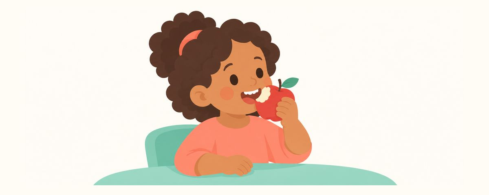

反正都會掉，乳牙為什麼還要治療？乳牙蛀牙放著不管會怎樣
乳臼齒會一直留到10到12歲，負責咀嚼、發音和替恆牙保留位置。整理乳牙蛀牙放著不管可能發生的事、現在依深度選擇方法的蛀牙管理方式，以及不能等到下次檢查的警訊。
重點一覽
- 乳臼齒會留到10-12歲，負責咀嚼和保留空間
- 蛀牙不治療會痛，甚至影響恆牙
- 不是每顆蛀牙都要馬上磨，先去檢查
「反正都會掉，一定要治療嗎？」這是爸媽非常常問的問題。孩子還小，又怕治療會太辛苦，就更猶豫了。這篇整理乳牙的工作、蛀牙放著不管可能發生的事，以及現在怎麼管理蛀牙。
乳牙的工作，以及放著不管會發生的事
乳牙感覺很快就會掉，其實工作的時間比想像中久。門牙比較早掉，但乳臼齒會一直留到10到12歲左右。這段期間，乳牙負責這些工作。
- 咀嚼：讓孩子能好好咀嚼各種食物。
- 發音：在學說話的時期，幫助孩子把音發清楚。
- 保留位置：替下面正在發育的恆牙保留長出來的位置。
蛀牙放著不管，可能會發生這些事。
- 疼痛和感染：蛀牙越來越深就會痛，牙齦也可能腫起來或化膿。
- 影響吃飯和睡覺：很多嚴重蛀牙的孩子，都有疼痛和吃飯、睡覺的問題。痛到吃不好，營養也會受影響，幼兒園生活和學習也可能受到影響。也有報告指出，治療後睡眠、飲食和疼痛都有改善。
- 影響恆牙：乳牙牙根尖端的發炎，可能讓正下方發育中的恆牙出現斑點，或發生萌發（牙齒長出來）的問題。
- 影響齒列：乳牙太早掉，恆牙長出來的空間會變窄，齒列可能變得不整齊。
- 新的蛀牙：有蛀牙的孩子，其他乳牙和恆牙蛀牙的風險也比較高。
孩子沒有喊痛，不代表就沒事。小小孩不太會用言語表達不舒服，有時會表現成只用一邊咬，或避開硬的食物。
現在用「齲齒管理」來看待蛀牙
以前認為，有破洞的蛀牙一律要磨掉再補起來。現在則是依蛀牙的深度和孩子能配合的程度，從多種方法中選擇，也就是「齲齒管理」。
- 用塗氟讓早期蛀牙不再惡化。
- 塗上阻止蛀牙惡化的藥物。
- 先做暫時性填補，爭取時間。
- 做填補，蛀得深的話就做神經治療。
所以不是每顆蛀牙都要馬上磨。不過要觀察還是治療，不是在家決定的事，而是在牙科評估狀況後，由牙醫師判斷。爸媽可以這樣做。
- 就算是乳牙蛀牙，也要到牙科評估。不要因為「反正會掉」就拖延。
- 問問有哪些選擇和優缺點。了解適合孩子年齡和配合程度的方法是什麼，各自可以期待什麼效果。
- 如果乳牙提早拔掉了，問問是否需要空間維持器。這是替恆牙保留位置的裝置。
- 治療後也要一起改變生活習慣。控制吃甜點心的次數，並好好刷牙。生活習慣不變，蛀牙還會再來。
常見問題
孩子還小，好像沒辦法接受治療。
這是有可能的。要不要治療、怎麼治療，取決於孩子的年齡、蛀牙的深度和配合的程度。有時也會用阻止惡化的藥物或暫時性填補等負擔比較小的方法來爭取時間，請和牙醫師討論。
門牙蛀牙也要治療嗎？
門牙也幫忙咀嚼和發音，並且在恆牙長出來之前保留位置。不要因為是門牙就放著不管，請到牙科評估狀況，再決定處理方式。
孩子沒喊痛，不就沒事了嗎？
蛀牙有時會在不痛的情況下持續惡化。就算孩子沒說，透過定期檢查確認狀況也很重要。
治療過了，又蛀牙了。
曾經蛀牙的孩子，出現新蛀牙的風險比較高。請一起檢視吃甜點心的次數、用含氟牙膏一天刷2次，以及睡前刷牙，並和牙醫師討論預防方法。
出現這些情況請馬上就醫
- 牙齦腫起來或看到膿時
- 晚上牙齒痛到醒來時
- 只用一邊咬，或避開硬的食物時
- 臉腫起來，或同時發燒時
- 牙齒上看得到破洞，或褐色、黑色的部分越來越大時
在對的時候收到提醒
在牙齒日曆 App 中輸入孩子的出生日期（或預產期），這些文章就會在需要的時候以提醒的方式送達。免費使用，無須註冊。
參考資料
- AAPD · Policy on Early Childhood Caries (ECC): Consequences and Preventive Strategies (2025)
- AAPD · Management of the Developing Dentition and Occlusion in Pediatric Dentistry (2024)
- AAPD · Policy on Hospitalization and Operating Room Access for Oral Care (2024)
- Dent J (Basel) · Public Health Aspects of Paediatric Dental Treatment under General Anaesthetic (Thomson) (2016)
本App中的資訊僅供一般衛教參考，無法取代專業牙科診療。關於孩子的狀況，請諮詢牙醫師。